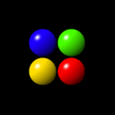
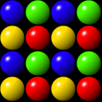
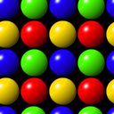

CNxSurface クラスは、サーフェス(画像データ)を管理するクラスです。CNxSurface クラスは、サイズを指定して空のサーフェスを作成するか、画像を読み込んでそのサイズに合わせたサーフェスを構築できます。読み込み可能な画像については、CNxImageLoader クラスを参照して下さい。
CNxSurface クラスは、実際の画像メモリとして DIBSection を作成します。CNxSurface クラスのメンバ関数による描画だけではなく、CNxSurface::GetDC() 関数によって取得したデバイスコンテキストを介して、GDI 関数を使用できます。また、DIBSection のハンドルも可能です。GDI の制限により、Windows95 / Windows98 では横幅 32767 (0x7fff) 以上の DIBSection は作成できません。この制限は、Windows NT / Windows2000 にはありません。
CNxSurface クラスの一部の関数では、矩形の指定に RECT 構造体を用いますが、右下の1ドットは領域に含みません。つまり (0, 0) - (32,32) という矩形が示す幅と高さは、32 ドットです。
CNxSurface クラスが扱えるサーフェスのピクセル形式は 32bpp 又は 8bpp 形式のみです。サーフェスの形式は、コンストラクタ の引数で指定します。
32bpp 形式は、RGB の他にピクセル単位の不透明度を示す A (アルファチャンネル)があります。アルファチャンネル情報を全く持たない画像(JPEG 等)を読み込むと、32bpp へ変換される際にアルファチャンネル情報を 255 (不透明) に設定します。PNG では、透過色もアルファチャンネル情報(0 又は 255)へ変換されます。
8bpp 形式は、カラーテーブル(パレット)付きの画像又は、アルファチャンネル付きの(濃淡を持つ矩形の塗り潰し)の転送元として使用できます。8bpp サーフェスをアルファチャンネルとして使用する場合は、ピクセルの値のみが意味を持ちます。
カラーテーブルは 32bpp 形式サーフェスへの転送の際に参照されます。この際に参照されるカラーテーブルは、DIBSection の物とは全く別です。DIBSection のカラーテーブルは作成時にグレイスケールとして設定され、CNxSurface::SetColorTable() 関数等でカラーテーブルの操作を行っても、DIBSection のカラーテーブルは変化しません。CNxSurface::UpdateDIBColorTable() メンバ関数によって、現在の(CNxSurface クラスの)カラーテーブルを DIBSection のカラーテーブルへ設定できます。
CNxSurface クラスの描画関数は、設定されている原点座標とクリッピング矩形に従って、描画のクリップを行ないます。デフォルトでは、原点座標は左上(0,0)、クリッピング矩形はサーフェス全体が設定されています。CNxSurface クラスにおけるクリッピング矩形とは、サーフェスへの描画可能な矩形を示します。例えば、クリッピング矩形が (20, 0) - (100, 100) と設定されている状態で、Blt() メンバ関数等によって (0, 0) - (100, 100) への描画を行っても、左端 20dot 分へは何も描画されません。原点座標は、描画されるサーフェスの描画(転送先)座標へ加算され、その結果が最終的な描画座標となります。クリッピングは原点座標を加算した結果について行われます。なお、クリッピング矩形と原点座標は、1つしか設定できません。原点座標は CNxSurface::SetOrg()、クリッピング矩形は CNxSurface::SetClipRect() 関数で設定します。
ページの最初 / NxDraw ライブラリ クラス階層図画像の読み込み時には、画像フォーマットに関らず、内部で CNxDIBImage オブジェクトへ変換され、その後サーフェスと同じ形式へ変換されます。変換の詳細を以下の表に示します。
| 転送元 DIB | 動作 |
|---|---|
| 32bpp | そのまま転送されます。ピクセル毎の4バイト目はアルファチャンネルとして扱います。 |
| 24bpp | RGB 自体はそのまま転送されます。全てのピクセルのアルファは 255 (不透明) になります。 |
| 16bpp | フルカラーへ変換されます。全てのピクセルのアルファは 255 になります。 |
| 8bpp | カラーテーブル(パレット)を参照しながら、32bpp へ変換されます。 |
| 4bpp | 8bpp と同じです。 |
| 1bpp | 8bpp と同じです。 |
| 転送元 DIB | 動作 |
|---|---|
| 32bpp | グレイスケール化されます(パレットをグレイスケールと見なします)。アルファ値は無視します。 |
| 24bpp | グレイスケール化されます(パレットをグレイスケールと見なします)。 |
| 16bpp | グレイスケール化されます(パレットをグレイスケールと見なします)。 |
| 8bpp | そのまま転送されます。 |
| 4bpp | 8bpp へ拡張します。インデックス自体は変化しません。ピクセルの値は、転送後も 0x00 〜 0x0f です。 |
| 1bpp | 8bpp へ拡張します。インデックス自体は変化しません。ピクセルの値は、転送後も 0x00 〜 0x01 です。 |
構築、消滅
| CNxSurface() | コンストラクタ |
| Create() | 初期化 |
幅と高さ
| GetWidth() | サーフェスの幅を取得 |
| GetHeight() | サーフェスの高さを取得 |
| GetRect() | サーフェスの矩形を取得 |
サーフェスメモリの操作
| GetBits() | サーフェスメモリへのポインタを取得 |
| GetPitch() | サーフェスメモリの幅を取得 |
| GetBitCount() | サーフェスのピクセルビット数を取得 |
| SetDIBits() | DIB をサーフェスへ転送 |
| GetDIBits() | サーフェスを DIB へ転送 |
カラーテーブルの操作
| GetColorTable() | カラーテーブルへのポインタを取得 |
| UpdateDIBColorTable() | 現在のカラーテーブルを DIBSection へ設定 |
描画
| Blt() | サーフェス間のブロック転送 |
| TileBlt() | ブロック転送(転送元をタイル状に敷き詰める) |
| FillRect() | 純色で塗り潰し |
| FilterBlt() | フィルタ適用伴うサーフェス間のブロック転送 |
| LoadImage() | イメージを読み込む |
| DrawText() | テキストを描画 |
| GetTextExtent() | テキストのサイズを返す |
| SetTextSmoothing() | テキスト描画の際のスムージングの有無を設定 |
| GetTextSmoothing() | テキスト描画の際のスムージングの有無を取得 |
| SetFont() | DrawText() 関数で使用するフォントを設定 |
| GetFont() | 現在設定されているフォントを取得 |
| GetDC() | サーフェスへの HDC を取得 |
| ReleaseDC() | GetDC() 関数で取得した HDC を開放する |
| GetHandle() | DIBSection ハンドルを取得 |
| SetClipRect() | クリッピング矩形を設定 |
| GetClipRect() | クリッピング矩形を取得 |
| SetOrg() | 原点座標を設定 |
| GetOrg() | 原点座標を取得 |
その他
| GetDIBImage() | CNxDIBImage オブジェクトへの参照を取得 |
| SaveImage() | サーフェスの内容をファイルへ保存 |
CNxSurface クラスのコンストラクタです。
| UINT uBitCount | サーフェスのビット深度 |
なし
uBitCount 引数へは、サーフェスのビット深度を 32 又は 8 で指定します。
コンストラクタ内では画像メモリを作成していないため、そのままではオブジェクトは使用できません。使用する前に CNxSurface::Create() 関数を呼び出してください。
サーフェスの為のメモリを確保して、CNxSurface オブジェクトを使用可能な状態にします。
| int nWidth | 作成するサーフェスの幅 |
| int nHeight | 作成するサーフェスの高さ |
| const BITMAPINFO* lpbmi | DIB の情報を示す BITMAPINFO 構造体へのポインタ |
| LPCVOID lpvBits | DIB のビットデータへのポインタ |
| CNxFile& nxfile | 読込元を示す CNxFile オブジェクトへの参照 |
| CNxDIBImage* pDIBImage | CNxDIBImage オブジェクトへのポインタ |
成功ならば TRUE
1番目の関数は、指定された幅と高さ、形式でサーフェスを作成し、すべてのピクセルを RGBA = 0, 0, 0, 0 (8bpp ならば A = 0) へ初期化します。
2番目の関数は、指定された画像を CNxFile オブジェクトから読み込み、その画像のサイズでサーフェスを作成します。サーフェスと画像の形式が異なる場合は、自動的にサーフェスの形式へ変換されます。8bpp 形式サーフェスの場合、カラーテーブル(概要又は、CNxSurface::GetColorTable() 関数の参照)の設定を行います。この関数は、CNxDraw::LoadImage() 関数を使用して画像を読み込みます。詳細については CNxImageLoader クラスの解説を参照して下さい。
3番目の関数は、指定された DIB のサイズでサーフェスを作成し、内容をコピーします。サーフェスと DIB の形式(コンストラクタで指定されたビット深度)が異なる場合は、自動的にサーフェスと同じ形式へ変換されます。8bpp 形式サーフェスの場合、カラーテーブルも設定されます。内部では、1番目の関数呼び出した後、CNxSurface::SetDIBits() 関数を呼び出しています。lpvBits 引数の意味については、CNxSurfae::SetDIBits() 関数の解説を参照して下さい。
4番目の関数は、指定された CNxDIBImage オブジェクトのサイズでサーフェスを作成し、内容をコピーします。
高さ(nHeight 引数又は BITMAPINFOHEADER 構造体の biHeight メンバの値)が正の値の場合 bottom-up 形式の DIB を、負の値ならば tom-down 形式の DIB を作成します。CNxSurface クラスのメンバ関数はどちらの形式にも対応しています。
サーフェスの幅を取得します。
なし
サーフェスの幅
サーフェスの高さを取得します。
なし
サーフェスの高さ
サーフェスの高さは、bottom-up, top-down 形式には関係なく、常に正の値です。
サーフェスの矩形を取得します。
| LPRECT lpRect | 矩形を受けとる RECT 構造体へのポインタ |
なし
サーフェスの矩形を取得します。RECT 構造体の left および top メンバは 0 になり、right と bottom メンバへはそれぞれ幅と高さが返されます。
サーフェスメモリへのポインタを取得します。
なし
サーフェスメモリへのポインタ。失敗なら NULL
左上(X = 0, Y = 0)のピクセルを示すポインタを返します。この関数は bottom-up, top-down 形式とは無関係に、常に画像上の左上へのポインタを返します。top-down 形式の場合は、ビットデータの先頭アドレスを示します。クリッピング矩形と原点座標は考慮されません。
以下の例は、32bpp サーフェスのアルファチャンネルを除く、全てのピクセルを反転します。
LPDWORD lpdwSurface = static_cast<LPDWORD>(pSurface->GetBits());
LONG lPitch = pSurface->GetPitch() / 4;
for (UINT v = 0; v < pSurface->GetHeight(); v++)
{
for (UINT u = 0; u < pSurface->GetWidth(); u++)
{
*(lpdwSurface + u) ^= 0x00ffffff;
}
lpdwSurface += lPitch;
}
サーフェスメモリの行の送り幅を取得します。
なし
行の送り幅を返します
サーフェスメモリ上で、すぐ下の行へ移動する為のポインタの差(行の送り幅)をバイト単位で返します。bottom-up 形式 DIB では、負の値が返されます。
サーフェスのピクセルビット数を取得します。
なし
サーフェスのピクセル当たりのビット数
サーフェスの1ドットを占めるビット数を取得します。例えば、ピクセルビット数に係らずサーフェスメモリ上の任意の座標へのポインタを取得するには以下の様に行ないます。
LPVOID lpSurface = (LPBYTE)GetBits() + (y * GetPitch()) + x * (GetBitCount() / 8);
カラーテーブルへのポインタを取得します。
なし
カラーテーブルへのポインタ。又は NULL
カラーテーブルの最初のエントリへのポインタを返します。この関数は、256個分の NxColor 型へのポインタを返しますが、実体は (CNxSurface が持っている )CNxDIBImage オブジェクト内の BITMAPINFO のカラーテーブル(bmiColors メンバ)です。なお、書き込む NxColor 値のアルファは必ずゼロにして下さい。アルファ値がゼロ以外の NxColor 値を書き込んでしまうと、RGBQUAD 構造体の rgbReserved メンバもゼロでない値になってしまいます(Win32API マニュアルによれば、rgbReserved メンバは予約済みで、値は必ずゼロでなければなりません)。
32bpp 形式のサーフェスに対して使用された場合は NULL を返します。
現在のカラーテーブルの内容を DIBSection へ設定します。
なし
成功ならば TRUE
カラーテーブルのアルファ値は無視されます。
この関数は、8bpp 形式のサーフェスに対してのみ有効です。32bpp サーフェスに対して使用された場合、関数は FALSE を返します。
DIB をサーフェスへ転送します。
| BOOL CNxSurface::SetDIBits( | int dx, int dy, const BITMAPINFO* lpbmi, LPCVOID lpvBits = NULL, |
| const RECT* lpSrcRect = NULL) | |
| BOOL CNxSurface::SetDIBits( | int dx, int dy, const CNxDIBImage* pDIBImage, const RECT* lpSrcRect = NULL) |
| int dx | 転送先 X 座標 |
| int dy | 転送先 Y 座標 |
| const BITMAPINFO* lpbmi | 転送元 DIB を示す BITMAPINFO 構造体へのポインタ |
| LPCVOID lpvBits = NULL | 転送元 DIB のビットデータへのポインタ |
| const RECT* lpSrcRect = NULL | 転送元矩形(NULL ならば全体) |
| const CNxDIBImage* pDIBImage | CNxDIBImage オブジェクトへのポインタ |
成功なら TRUE を返します。
指定された矩形を DIB からサーフェスへ転送します。lpvBits 引数へは、転送される DIB のビットデータの左上隅へのポインタを指定します。bottom-up 形式(標準的な BMP ファイルの形式)ならば最下ライン、top-down 形式ならば最上ラインの左上を示します。NULL が指定されると、BITMAPINFO 構造体の内容から lpvBits を計算します。この場合は、BITMAPINFO 構造体の直後にビットデータ等が連続していなければなりません。
対応している DIB 形式は無圧縮の 1bpp、4bpp、8bpp、16bpp, 24bpp および 32bpp です。bottom-up, top-down 形式の両方に対応しています。未対応の DIB が渡されると、関数は FALSE を返します。
この関数は、8bpp 形式サーフェスのカラーテーブルを更新しません。
ページの最初 / クラスメンバ / NxDraw ライブラリ クラス階層図サーフェスを DIB へ転送します。
| BOOL CNxSurface::GetDIBits( | int dx, int dy, LPBITMAPINFO lpbmi, LPVOID lpvBits = NULL, |
| const RECT* lpSrcRect = NULL) const |
| int dx | DIB 上の転送先 X 座標 |
| int dy | DIB 上の転送先 Y 座標 |
| LPBITMAPINFO lpbmi | 転送先 DIB を示す BITMAPINFO 構造体へのポインタ |
| LPCVOID lpvBits = NULL | 転送先 DIB のビットデータへのポインタ |
| const RECT* lpSrcRect = NULL | 転送元矩形を示す RECT 構造体へのポインタ |
成功なら TRUE を返します。
この関数は、互換性の為に残されています。新しく作成するアプリケーションでは、CNxDIBImage::GetDIBImage() 関数で CNxDIBImage オブジェクトへの参照を得た後、CNxDIBImage::Blt() 関数等を使用して下さい。
この関数は 8bpp 形式サーフェスのカラーテーブルを取得しません。
x および y 引数へは、DIB への転送先座標を指定します。
lpbmi 引数が示す BITMAPINFO 構造体の最初から 6 個のメンバは初期化が必要です。BITMAPINFO 構造体の bmiHeader.biBitCount メンバは、取得する DIB の形式を指定します。このメンバに従って必要ならば変換が行われます。サポートしていない形式が指定されると、関数は失敗します。bmiHeader.biWidth と、bmiHeader.biHeight メンバへは DIB の大きさを指定します。bmiHeader.biHeight の値を負にすると、top-down 形式と見なします。
lpvBits 引数へは、DIB のビットデータを取得する為のバッファを指定します。bmiHeader.biHeight メンバが負の値の場合、ビットデータは top - down 形式で取得されます(通常の BITMAP は bottom - up 形式です)。NULL を指定すると、ビットデータの取得は行われませんが、BITMAPINFO 構造体の更新は行います。ビットデータを取得する前に、必要なメモリを確保する場合などに使用できます。
lpSrcRect 引数へは、サーフェス上の転送元矩形を指定します。この引数が NULL ならば、サーフェス全体と見なされます。
転送元と転送先は必要ならばクリップが行われます。クリップによって、実際に DIB へ転送される矩形は BITMAPINFO 構造体の幅と高さよりも小さくなる場合がありますが、lpvBits 引数で示すバッファへの転送は、常に BITMAPINFO 構造体の内容で示されるサイズに必要なメモリが用意されている見なします。特に、bottom-up 形式の場合、バッファの最後の方から転送されるため、少なくとも bmiHeader.biWidth * (ピクセルあたりのバイト数) * bmiHeader.biHeight 以上のサイズが必要です。必要なメモリは、BITMAPINFO 構造体の bmiHeader.biSizeImage メンバから取得できます(この値は常に DIB 全体のサイズを示します)。クリップの結果、矩形が空になった場合は、何も転送せずに TRUE を返します。
以下は、サーフェスの内容をクリップボードへコピーする例です。最初に BITMAPINFO 構造体だけを受け取ります。次に、ビットデータの為に必要なサイズ(+ BITMAPINFO 構造体)のメモリを確保し、BITMAPINFO 構造体と連続する様に、ビットデータを取得しています。
RECT rect;
pSurface->GetRect(&rect);
BITMAPINFO bmi;
bmi.bmiHeader.biSize = sizeof(BITMAPINFOHEADER);
bmi.bmiHeader.biWidth = rect.right - rect.left;
bmi.bmiHeader.biHeight = rect.bottom - rect.top;
bmi.bmiHeader.biPlanes = 1;
bmi.bmiHeader.biBitCount = 24;
bmi.bmiHeader.biCompression = BI_RGB;
// BITMAPINFO 構造体を得る
if (pSurface->GetDIBits(0, 0, &bmi, NULL, &rect))
{
// BITMAPINFO 構造体と、ビットデータを連続して保存するためのメモリを確保
HGLOBAL hGlobal = ::GlobalAlloc(GHND | GMEM_DDESHARE, bmi.bmiHeader.biSizeImage + bmi.bmiHeader.biSize);
if (hGlobal != NULL)
{
LPVOID lpvGlobal = ::GlobalLock(hGlobal);
// 確保したメモリの先頭へ、BITMAPINFO 構造体を転送
memcpy(lpvGlobal, &bmi, bmi.bmiHeader.biSize);
// BITMAPINFO 構造体の直後へ、ビットデータを取得
if (pSurface->GetDIBits(0, 0, &bmi, static_cast<LPBYTE>(lpvGlobal) + bmi.bmiHeader.biSize, &rect))
{
::GlobalUnlock(hGlobal);
// クリップボードへデータを設定
::EmptyClipboard();
::SetClipboardData(CF_DIB, hGlobal);
}
else
{
// エラー
::GlobalUnlock(hGlobal);
::GlobalFree(hGlobal);
}
}
}
ページの最初 /
クラスメンバ / NxDraw ライブラリ クラス階層図サーフェス間のブロック転送を行ないます。
| BOOL CNxSurface::Blt( | int dx, int dy,const CNxSurface* pSrcSurface, const RECT* lpSrcRect, const NxBlt* pNxBlt = NULL) |
| BOOL CNxSurface::Blt( | const RECT* lpDestRect, const CNxSurface* pSrcSurface, const RECT* lpSrcRect, const NxBlt* pNxBlt = NULL) |
| int dx | 転送先 X 座標 |
| int dy | 転送先 Y 座標 |
| const RECT* lpDestRect | 転送先矩形を示す RECT 構造体へのポインタ(NULL ならはサーフェス全体) |
| const CNxSurface* pSrcSurface | 転送元サーフェスへのポインタ(NULL ならば転送先と同じ) |
| const RECT* lpSrcRect | 転送元矩形を示す RECT 構造体へのポインタ(NULL ならばサーフェス全体) |
| const NxBlt* pNxBlt | NxBlt 構造体へのポインタ |
成功ならば TRUE
サーフェス間のブロック転送、および塗り潰しを行ないます。
最初の書式の場合、転送先矩形の左上は x および y で指定され、矩形の大きさは転送元矩形から計算されます。
転送元矩形と転送先が大きさが異なる場合、転送先の大きさに合う様に、転送元を拡大又は縮小して転送します。
pSrcSurface 引数へ NULL が指定されると、転送元サーフェスと転送元矩形は、転送先サーフェスおよび矩形と同じになります。lpSrcRect 引数は無視されます。
この関数の詳しい使用方法については、NxBlt 構造体の解説を参照して下さい。
サーフェス間のブロック転送を行ないます。転送元矩形が転送先矩形より小さい場合は、転送元をタイル状に敷き詰めます。
| BOOL CNxSurface::TileBlt( | const RECT*lpDestRect, const CNxSurface* pSrcSurface, const RECT* lpSrcRect, int nSrcXOrg, int nSrcYOrg, const NxBlt* pNxBlt = NULL) |
| const RECT* lpDestRect | 転送先矩形 |
| const CNxSurface* pSrcSurface | 転送元サーフェスへのポインタ |
| const RECT* lpSrcRect | 転送元矩形 |
| int nSrcXOrg | 転送元 X 原点座標 |
| int nSrcYOrg | 転送元 Y 原点座標 |
| const NxBlt* pNxBlt | NxBlt 構造体へのポインタ |
成功ならば TRUE
転送元矩形を繰り返し転送してタイル状に敷き詰めます。nSrcXOrg および nSrcYOrg 引数によって、転送元原点の座標が指定できます。転送が開始される転送元矩形は、原点座標と lpSrcRect 引数の矩形の左上を加えたものになります。
転送元と転送先のサイズが同じ場合、nSrcXOrg および nSrcYOrg 引数で指定される原点によって、転送元が回り込みます。例えば、nSrcXOrg 引数へ正の値を指定すると、転送元が全体的へ左へ移動し、それによって(左端へ)隠れる部分は、転送先の右側に転送されます。正面から見ると、絵を貼り付けた円筒を左へ回転した様なイメージになります。以下の図は、64x64 サイズの画像を、128x128 のサーフェスへ TileBlt() 関数によって転送した例です。
| 転送元画像 | 原点(0, 0) | 原点(10, 10) |
|---|---|---|
|  |  |  |
なお、転送元の反転には対応していません。
矩形を指定された色で塗り潰します。
| int dx | 塗り潰し矩形の開始 X 座標 |
| int dy | 塗り潰し矩形の開始 Y 座標 |
| int cx | 塗り潰し矩形の幅 |
| int cy | 塗り潰し矩形の高さ |
| const RECT* lpRect | 塗り潰し矩形 (NULL ならばサーフェス全体) |
| NxColor nxColor | 塗り潰し色 |
成功ならば TRUE
サーフェス矩形を純色で塗り潰します。塗り潰し前のピクセルは一切無視され、アルファ値も含めて、そのまま塗り潰しに使用されます。8bpp 形式サーフェスでは、アルファ値のみが有効です。
この関数と CNxSurface::Blt() 関数とでは、アルファ値の扱いが異なります。Blt() 関数では、NxBlt 構造体の dwFlags メンバへ NxBlt::colorFill を指定する事で、サーフェスの塗り潰しが可能ですが、実際に行われるのは単純な塗り潰しではなくブレンド塗り潰しです(通常ブレンドの場合、アルファ値が 255 ならば指定色で塗り潰され、0 では何も行ないません)。しかし、FillRect() 関数では、アルファ値を不透明度とは解釈せず、そのままサーフェスを塗り潰します。これは、サーフェス矩形を透明状態(アルファ値をゼロ)にしたい場合などに使用できます。Blt() 関数による塗り潰しでは、基本的にサーフェス上のアルファ値を直接操作する事はできません。
フィルタを適用しながら矩形を転送します。
| BOOL CNxSurface::FilterBlt( | int dx, int dy,const CNxSurface* pSrcSurface, const RECT* lpSrcRect, const NxFilterBlt* pNxFilterBlt) |
| BOOL CNxSurface::FilterBlt( | const RECT* lpDestRect, const CNxSurface* pSrcSurface, const RECT* lpSrcRect, const NxFilterBlt* pNxFilterBlt) |
| int dx | 転送先 X 座標 |
| int dy | 転送先 Y 座標 |
| const RECT* lpDestRect | 転送先矩形を示す RECT 構造体へのポインタ(NULL ならはサーフェス全体) |
| const CNxSurface* pSrcSurface | 転送元サーフェスへのポインタ(NULL ならば転送先と同じ) |
| const RECT* lpSrcRect | 転送元矩形を示す RECT 構造体へのポインタ(NULL ならばサーフェス全体) |
| const NxFilterBlt* pNxFilterBlt | NxFilterBlt 構造体へのポインタ |
成功ならば TRUE
フィルタの適用はピクセル単位で行われます。まず、転送元サーフェスのピクセルに対してフィルタが適用(例えばグレイスケール化)されます。次に、その結果をフィルタ適用前の転送元サーフェスのピクセルと通常ブレンドし、結果を転送先サーフェスへ書き込みます。CNxSurface::Blt() 関数と異なり、転送先サーフェス矩形のピクセルは全く参照しません。つまり、FilterBlt() で行われる通常ブレンドは、フィルタを適用する強さを意味します。転送元サーフェス矩形は(転送先と重なっていない限り)破壊する事はありません。
全てのフィルタは、あるピクセルの処理中に、他の座標のピクセルを参照する事はありません。また、アルファチャンネルはフィルタが意図的に操作しない限り、転送先へそのまま転送されます(現在、アルファチャンネル操作するフィルタはサポートしていません)。
pSurface 引数へ NULL を指定すると、lpSrcRect は無視され、転送先サーフェスと矩形が指定されたと見なします。ただし、クリップされた後の(最終的な)矩形が用いられます(CNxSurface::Blt() 関数の動作とは異なります)。この事を利用し、転送先のみを指定してフィルタを適用する事ができます。
この関数の詳細については、NxFilterBlt 構造体 の解説を参照して下さい。
サーフェスへイメージを読み込みます。
| BOOL CNxSurface::LoadImage( | int dx, int dy, CNxFile& nxfile, |
| const RECT* lpSrcRect = NULL, BOOL bUpdateColorTable = FALSE) |
| int dx | 読み込み先 X 座標 |
| int dy | 読み込み先 Y 座標 |
| CNxFile& nxfile | 読み込み元 CNxFile オブジェクトへの参照 |
| const RECT* lpSrcRect | イメージからの転送矩形(NULL ならば全体) |
| BOOL bUpdateColorTable | TRUE ならばカラーテーブルを更新(8bpp 形式のみ) |
成功ならば TRUE
サーフェスの指定された座標(dx, dy)へ、読み込んだイメージの矩形(lpSrcRect)を転送します。サーフェスからはみ出した部分は切り捨てられます。
bUpdateColorTable が TRUE の場合、カラーテーブル(パレット)が読み込まれたイメージのカラーテーブルへ更新されます。この引数は、8bpp 形式サーフェスのみ有効です。32bpp 形式では無視されます。
この関数は、CNxDraw::LoadImage() 関数を使用して画像を読み込みます。詳細については CNxImageLoader クラスの解説を参照して下さい。
テキストを描画します。
| BOOL CNxSurface::DrawText( | int dx, int dy, const RECT* lpRect, |
| LPCTSTR lpString, NxColor nxColor) |
| BOOL CNxSurface::DrawText( | int dx, int dy, const RECT* lpRect, |
| LPCTSTR lpString, const NxBlt* pNxBlt) |
| int dx | 描画先 X 座標 |
| int dy | 描画先 Y 座標 |
| const RECT* lpRect | 描画矩形(NULL ならばサーフェス全体) |
| LPCTSTR lpString | 描画する文字列へのポインタ |
| NxColor nxColor | 文字色 |
| NxBlt pNxBlt | NxBlt 構造体へのポインタ |
成功ならば TRUE
描画に使用するフォントは CNxSurface::SetFont() 関数で設定します。デフォルトではフォントは設定されていません。CNxSurface::DrawText() 関数を呼び出す前に、必ずフォントを設定して下さい。フォントが未指定の場合、関数は失敗します。
最初の書式の関数は、指定された色と不透明度で文字列をサーフェスへ描画します。不透明度は nxColor 引数のアルファ値で指定します。この形式は 32bpp 形式のサーフェス以外へは描画できません。
2番目の関数は、文字列を内部サーフェスへ描画した後、指定された NxBlt 構造体の内容に従って内部サーフェスから転送します。最初の関数も内部ではこの関数を呼び出し、NxBlt::srcAlpha | NxBlt::colorFill | NxBlt::destAlpha | NxBlt::blendNormal によって目的のサーフェスへ転送しています。内部サーフェスは 8bpp 形式で、描画されたドットが 255、描画されないドットは 0 です。スムージング描画(CNxSurface::SetTextSmoothing() 関数を参照)では、この中間の値もあります。
以下は緑色の文字を表示する例です。アルファチャンネル付き塗り潰しの転送元として使用しています。
NxBlt nxb; nxb.dwFlags = NxBlt::colorFill | NxBlt::srcAlpha | NxBlt::blendNormal; nxb.nxbColor = CNxColor(0, 255, 0); pSurface->DrawText(0, 0, NULL, "文字列", &nxb);
テキストを完全に覆う矩形を取得します。
| LPCTSTR lpszString | NULL で終わる文字列へのポインタ |
| LPRECT lpRect | テキストの矩形を受けとる RECT 構造体へのポインタ |
成功ならば TRUE
サーフェスに設定されているフォント(CNxSurface::SetFont() 関数を参照)を用いてテキストを描画した時の矩形を取得します。デフォルトではフォントは設定されていません。この関数を呼び出す前に、必ずフォントを設定して下さい。フォントが未指定の場合、関数は失敗します。スムージングが指定されている場合は、整数へ切り上げた(4倍角ではない)実サイズの矩形が返されます。
テキスト描画の際のスムージングの有無を設定します。
| BOOL bSmoothing | スムージング描画を行うならば TRUE |
以前の状態
bSmoothing 引数を TRUE にして、この関数を呼び出すと、CNxSurface::DrawText() 関数でテキストを描画する際にスムージングを行います。スムージング描画の際には、実際に描画されるフォントの 4倍角サイズの物が使用されます。フォントの作成は CNxSurface クラスと CNxFont クラスが自動的に行います。
テキスト描画の際のスムージングの有無を取得します。
なし
スムージングを行うならば TRUE
テキスト描画関数で使用されるフォントを設定します。
| CNxFont* pFont | テキスト描画に使用する CNxFont オブジェクトへのポインタ |
成功ならば以前のフォント。初めてフォントが設定されたならば NULL を返します。
テキスト描画時に使用されるフォントを設定します。CNxSurface クラスは、CNxFont オブジェクトへのポインタのみを持ちます(実体はコピーしません)。フォントは、CNxSurface:::DrawText() 関数でテキストを描画する度に参照される為、設定後も削除しない様にして下さい。pFont 引数へ NULL を指定する事で、フォントの設定を解除できます。
テキスト描画関数で使用されるフォントを取得します。
なし
CNxFont オブジェクトへのポインタ
サーフェスのデバイスコンテキストハンドルを取得します。
なし
成功ならばデバイスコンテキストハンドル。失敗ならば NULL
メモリデバイスコンテキストを作成して、GDI Object (DIBSection) を選択します。この関数は参照カウンタを持っており、デバイスコンテキストの作成と GDI オブジェクトの選択は、初回呼出し時のみ行われます。二度目以後はカウンタを増加するだけです。CNxSurface::ReleaseDC() 関数によって参照カウンタが減らされ、ゼロになるとデバイスコンテキストの削除が行われます。
以前のバージョンと異なり、デバイスコンテキストへフォントは選択されません。
デバイスコンテキストへ対して描画を行う場合は注意が必要です。サーフェスの原点座標(CNxSurface::SetOrg() 関数を参照)と、クリッピング矩形(CNxSurface::SetClipRect() 関数を参照)は考慮されません。サーフェスのクリッピング状態を完全に把握している場合のみ使用して下さい。
CNxSurface::GetDC() で取得したデバイスコンテキストを開放します。
なし
デバイスコンテキストの参照カウント数。ゼロならば、デバイスコンテキストは開放済み。
この関数は CNxSurface::GetDC() 関数によって増加したデバイスコンテキストの参照カウンタから１を減じ、その結果がゼロになった時、実際にデバイスコンテキストの削除を行ないます。
DIBSection へのハンドル(HBITMAP 型)を返します。
なし
DIBSection へのハンドル
この関数は常に正しいハンドルを返しますが、CNxSurface::GetDC() 関数によって、サーフェスのデバイスコンテストを使用している時には、返されたハンドルをメモリデバイスコンテキストへ選択する事はできません。これは、HBITMAP オブジェクトは同時に複数のデバイスコンテキストへ選択できないという GDI の制約によるものです。
| const RECT* lpClipRect | 設定するクリッピング矩形を示す RECT 構造体へのポインタ |
なし
サーフェスに対する全ての描画は、クリッピング矩形の影響を受けます。設定されているクリッピング矩形の外側に描画する事はできません。lpClipRect 引数へは、新しいクリッピング矩形を指定します。NULL を指定すると、サーフェス全体(デフォルト)になります。。クリッピング矩形は NxDraw ライブラリのクラスやメンバ関数によって一時的に変更される事はありますが、基本的には再度設定しない限り保持されます。CNxSprite クラスでは CNxSprtie::Draw() 関数を呼び出す直前に、描画先サーフェスに対して適切なクリッピング矩形を設定します。
サーフェスへ設定できるクリッピング矩形は一つだけです。新しい矩形を設定すると以前の矩形は無効になります。
クリッピング矩形を取得します。
| LPRECT lpClipRect | クリッピング矩形を受けとる RECT 構造体へのポインタ |
なし
サーフェスに設定されている現在のクリッピング矩形を取得します。
| int nXOrg | 原点 X 座標 |
| int nYOrg | 原点 Y 座標 |
なし
サーフェスに対する全ての描画は、原点座標とクリッピング矩形の影響を受けます。原点座標のデフォルトは X = 0, Y = 0 です。原点座標は NxDraw ライブラリのクラスやメンバ関数によって一時的に変更される事はありますが、基本的には再度設定しない限り保持されます。CNxSprite クラスでは CNxSprtie::Draw() 関数を呼び出す直前に、描画先サーフェスに対して適切な原点座標を設定します。
サーフェスへ設定できる原点座標は一つだけです。新しい座標を設定すると以前の座標は無効になります。
原点座標を取得します。
| LPPOINT lpPoint | 原点座標を受けとる POINT 構造体へのポインタ |
なし
サーフェスに設定されている現在の原点座標を取得します。
CNxDIBImage オブジェクトへの参照を取得します。
なし
CNxDIBImage オブジェクトへの参照。
CNxSurface クラスは DIBSection の DIB 部の操作を CNxDIBImage クラスによって行う為、メンバ変数として 一つの CNxDIBImage オブジェクトを持っています。返された CNxDIBImage オブジェクトのビットイメージを操作すると、CNxSurface のビットイメージも影響を受けます(8bpp 形式のサーフェスの場合、カラーテーブルも同様です)。
画像を保存する際、CNxDIBImageSaver 派生クラスへ、保存元 CNxDIBImage オブジェクトとして渡す事ができます。
ページの最初 / クラスメンバ / NxDraw ライブラリ クラス階層図サーフェスの内容をファイルへ保存します。
| LPCTSTR lpszFileName | ファイル名 |
| CNxFile& nxfile | CNxFile クラスへの参照 |
| const RECT* lpRect | 保存される矩形(NULL ならば全体) |
成功ならば TRUE
32bpp の形式のサーフェスは 24bpp BMP で、8bpp 形式のサーフェスはカラーテーブル付きの 8bpp BMP で保存します。
この関数は、従来のライブラリとの互換性の為に残されています。新しいアプリケーションでは、CNxSurface::GetDIBImage() メンバ関数と、CNxBMPImageSaver クラスを使用して下さい。この関数の実装を以下に示します。
BOOL CNxSurface::SaveImage(CNxFile& nxfile, const RECT* lpRect) const
{
CNxBMPImageSaver saver(CNxBMPImageSaver::stripAlpha);
return saver.SaveDIBImage(nxfile, GetDIBImage(), lpRect);
}
ページの最初 /
クラスメンバ / NxDraw ライブラリ クラス階層図